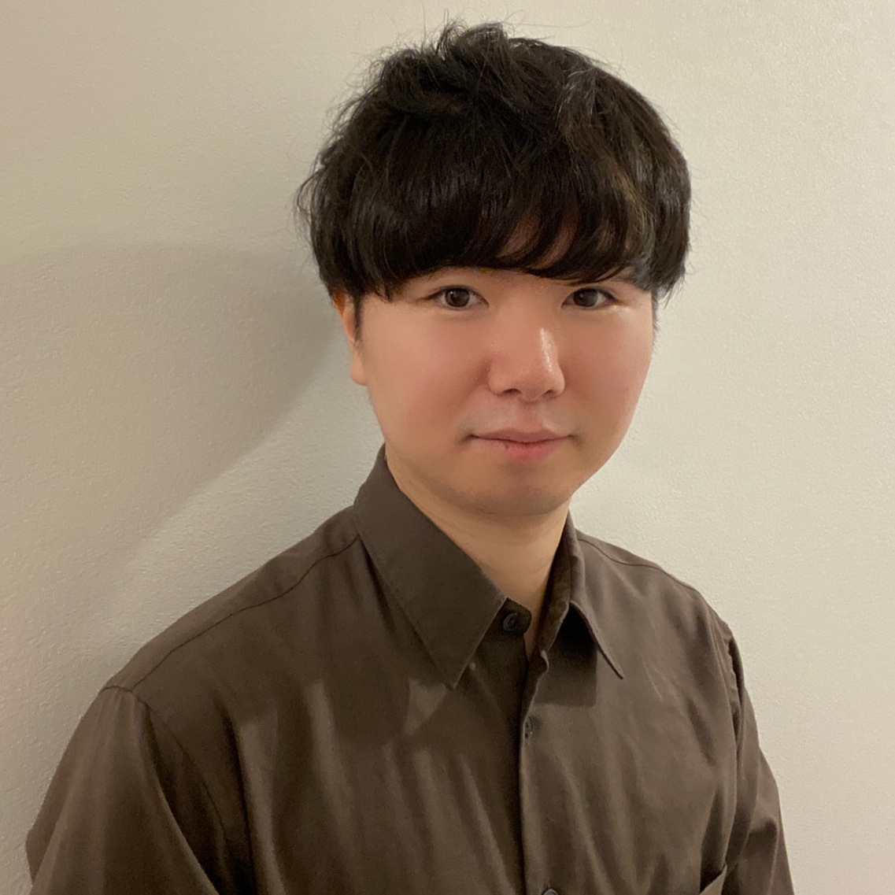
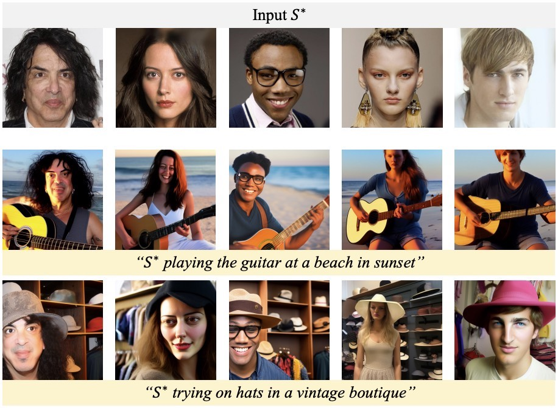
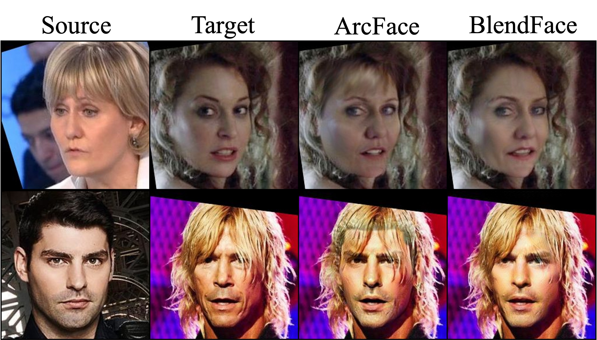

I am a postdoctoral researcher at Computer Vision and Media Lab at the University of Tokyo.
I am mainly working on Spatial Artificial Intelligence (SpatialAI), e.g., spatial layout generation, 3D/4D reconstruction and generation.


Graduate School of Information Science and Technology
Department of Information and Communication Engineering
Supervisor: Prof. Toshihiko Yamasaki
2022.4 - 2025.3
Graduate School of Information Science and Technology
Department of Information and Communication Engineering
Supervisor: Prof. Toshihiko Yamasaki
2020.4 - 2022.3
Under Graduate School of Engineering
Department of Electrical and Information Engineering
Supervisor: Prof. Kazunori Hayashi
2015.4 - 2019.3